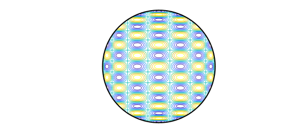

1. Numerical integration over the disk
In studying cubature formulas, we needed to compute the integrals of products of Chebyshev polynomials $T_j(x) T_k(y)$ over the unit disk, like this one:
T8 = chebpoly(8); T16 = chebpoly(16);
s = linspace(-1,1,160); [xx,yy] = meshgrid(s,s);
ff = T8(xx).*T16(yy);
ff(xx.^2+yy.^2>1) = NaN;
contour(s,s,ff), axis equal off
hold on, plot(chebfun('exp(1i*x)',[0 2*pi]),'k'), hold off

If $j$ or $k$ is odd, the integral is zero, but even if they are both even, to our surprise, we found that the integrals are still usually zero! In fact, a nonzero result only shows up if $j$ and $k$ differ by 0 or 2. Thus the function plotted above, for example, has integral exactly zero over the disk. This is not obvious.
Speaking in general, suppose we want to integrate a smooth function $f(r,t)$ numerically over the unit disk, where $r$ is radius and $t$ is angle. Soon Diskfun will be available for such problems, but here, we use standard Chebfun. Let's assume that $f$ is defined by a function that accepts a scalar $r$ and a vector $t$, like this one:
f = @(r,t) 1 + 0*t;
Here is a numerical confirmation that the integral of $1$ is $\pi$:
format long fr = @(r) r*sum(chebfun(@(t) f(r,t),[0,2*pi],'trig')); I = sum(chebfun(@(r) fr(r),[0 1],'vectorize')) Iexact = pi
I = 3.141592653589793 Iexact = 3.141592653589793
For the function $f(r,t) = r^2$, the integral is $\pi/2$:
f = @(r,t) r^2 + 0*t; fr = @(r) r*sum(chebfun(@(t) f(r,t),[0,2*pi],'trig')); I = sum(chebfun(@(r) fr(r),[0 1],'vectorize')) Iexact = pi/2
I = 1.570796326794897 Iexact = 1.570796326794897
For the function $f(r,t) = r^2 \cos^2(t)$, the integral is $\pi/2$:
f = @(r,t) r^2*cos(t).^2; fr = @(r) r*sum(chebfun(@(t) f(r,t),[0,2*pi],'trig')); I = sum(chebfun(@(r) fr(r),[0 1],'vectorize')) Iexact = pi/4
I = 0.785398163397448 Iexact = 0.785398163397448
2. Numerical integration of products of Chebyshev polynomials
What about those products of Chebyshev polynomials? Here is a matrix showing the numerically computed integrals for $k = 0,2,4,6,8,10$. As claimed above, the matrix is tridiagonal.
tic
I = zeros(6);
format short
for j = 0:2:10
Tj = chebpoly(j);
for k = 0:2:j
Tk = chebpoly(k);
f = @(r,t) Tk(r*cos(t)).*Tj(r*sin(t));
fr = @(r) r*sum(chebfun(@(t) f(r,t),[0,2*pi],'trig'));
I(1+j/2,1+k/2) = sum(chebfun(@(r) fr(r),[0 1],'vectorize'));
end
end
I = I + tril(I,-1)'
time_elapsed_in_seconds = toc
I =
3.1416 -1.5708 -0.0000 0.0000 -0.0000 0.0000
-1.5708 0.5236 0.2618 0.0000 -0.0000 -0.0000
-0.0000 0.2618 -0.1047 -0.1571 0.0000 -0.0000
0.0000 0.0000 -0.1571 0.0449 0.1122 0.0000
-0.0000 -0.0000 0.0000 0.1122 -0.0249 -0.0873
0.0000 -0.0000 -0.0000 0.0000 -0.0873 0.0159
time_elapsed_in_seconds =
13.6988
3. Analytic expressions for the integrals
Let $I_{jk}$ denote the integral of $T_j(x) T_k(y)$ over the unit disk. The following explicit formulas derived by the first author (details not reported here) give the integrals:
$$ I_{00} = \pi, $$
$$ I_{02} = I_{20} = -{\pi\over 2}, $$
$$ I_{kk} = {\pi (-1)^{k/2} \over 2 - 2k^2} \quad \hbox{($k$ even, $k\ge 2$)}, $$
$$ I_{k,k+2} = I_{k+2,k} = {\pi (-1)^{1+k/2} \over 4k + 4} \quad \hbox{($k$ even, $k\ge 2$)}, $$
In all other cases $I_{jk} = 0$.
Using these formulas, we can reproduce the matrix above as follows:
I = zeros(6); I(1,1) = pi; I(2,1) = -pi/2; for k = 2:2:10 I(1+k/2,1+k/2) = pi*(-1)^(k/2)/(2-2*k^2); end for k = 2:2:8 I(2+k/2,1+k/2) = -pi*(-1)^(k/2)/(4*k+4); end I = I + tril(I,-1)'
I =
3.1416 -1.5708 0 0 0 0
-1.5708 0.5236 0.2618 0 0 0
0 0.2618 -0.1047 -0.1571 0 0
0 0 -0.1571 0.0449 0.1122 0
0 0 0 0.1122 -0.0249 -0.0873
0 0 0 0 -0.0873 0.0159
4. Application to integration of general functions
The results of the last section imply that there is an immediate way to compute the integral of a chebfun2 over a disk: just take the appropriate linear combination of its bivariate Chebyshev coefficients. We will probably develop this idea into a new Chebfun2 sumdisk command.